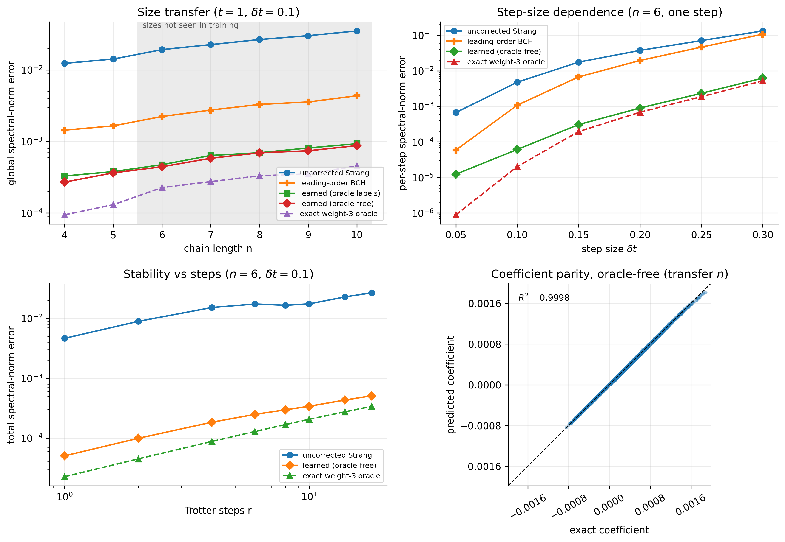

Lie-Algebraic Residual Compilation for Hamiltonian Simulation
A neural network that learns the exact correction to quantum-simulation error — with a mathematical guarantee, and the ability to transfer from tiny training systems to ones it has never seen.
Product-formula (Trotter–Suzuki) error is recast as an operator to be learned under a provable bound. A single translation-equivariant network predicts the residual generator Kq(δt) from local Hamiltonian couplings. Trained only on 4–5-qubit chains, it corrects 10-qubit systems it never saw, trains with no exponential-size oracle, and beats the analytic baseline by more than an order of magnitude — all on top of closed-form theorems for optimality, compression, and linear stability, with every number recomputed from first-principles simulation.
Provably-bounded operator learning that generalizes — and removes the exponential bottleneck.
Quantum-simulation corrections have been either exact-but-unscalable or cheap-but-heuristic. This work delivers a learned correction that is cheap, scalable, and carries a closed-form error guarantee — demonstrated on disordered transverse-field Ising chains, every number reproduced from first principles.
Out-of-distribution size transfer
A single per-site network trained on 4–5-qubit chains corrects systems up to 10 qubits — a 32× larger Hilbert space — that it never saw in training (R² = 0.9998). The generalization is not luck: a proved locality theorem explains exactly why one local map works at any chain length.
Trains with no exponential oracle
Training labels come from fixed-size local patches of at most seven qubits — never a dense 2n propagator. The oracle-free model matches the oracle-trained one, removing the scalability bottleneck that limits exact methods.
Machine learning with a proof
The learned correction inherits a closed-form stability bound: global simulation error is guaranteed to grow only linearly in the model’s per-step prediction error. The network is therefore safe by construction — a rare property for a learned physical model.
Beats the analytic baseline
Conditioned on the step size, the learned correction outperforms the parameter-free leading-order (BCH) correction by more than an order of magnitude exactly where that correction fails, capturing structure that hand analysis misses.

The result in one figure
Top left: trained on 4–5 qubits, the learned correction (oracle and oracle-free, overlapping) cuts error 40–45× out to 10 qubits never seen in training, tracking the exact oracle and beating leading-order BCH. Top right: as the step size grows, leading-order BCH collapses toward the uncorrected formula while the learned correction tracks the oracle. Bottom left: total error grows linearly in the number of steps, exactly as the stability theorem predicts. Bottom right: predicted-versus-exact coefficients on held-out sizes, R² = 0.9998.
Theory & Results
Rigorous Lie-algebraic theory, matched number-for-number by deterministic experiments.
The finite-step error of a product formula is treated as an operator to be studied, bounded, and compressed. Existence, uniqueness, optimality, and stability are established by closed-form proofs, then verified to floating-point precision on 4–6 qubit transverse-field Ising chains. The framework is deliberately honest about scope: the exact residual sets the target, and the practical contribution is a provable way to compress it.
Exact residual factorization
The residual Rq(δt) = U(δt) Sq(δt)† is the unique unitary left multiplier mapping a Trotter–Suzuki step back to exact evolution. Its Hermitian generator Kq = i log Rq lives in the dynamical Lie algebra, is small for small δt, and inherits the local commutator structure of the product-formula defect.
Optimality and uniqueness
Rq is the unique minimizer of the one-step correction error in every unitarily invariant norm—not one chosen figure of merit. Projecting Kq onto an implementable operator subspace yields the unique Frobenius-optimal compressed generator, so the cheapest useful correction is mathematically determined rather than searched for.
Stability of approximate residuals
When the residual is only approximately implemented—by BCH truncation, variational compilation, or a learned model—the global simulation error is bounded by r η over r steps, with a Duhamel-type bound linking spectral error to the generator error ‖Kq − K̂q‖. A fidelity or learning-loss target converts directly into a per-step design budget.
Result
Statement
Why it matters
Exact factorization & optimality
Rq is the unique norm-optimal left correction
Sets a closed-form oracle ceiling for any order-matched correction.
Multi-step stability
Global error ≤ rη for approximate residuals
Turns a fidelity or learning-loss spec into a per-step synthesis budget.
Frobenius-optimal projection & TFIM weight ≤ 3
Low-weight Pauli residuals are provably near-optimal
Cheap, local compressed generators inherit the oracle's accuracy.
Compressed TFIM benchmark (n = 5, q = 2)
1.384×10-2 → 1.545×10-4 (w ≤ 3) → 1.850×10-7 (w ≤ 4)
Structured compression recovers most of the oracle gain at a fraction of the cost.
Applications
Where exact, compressible residual correction creates value across quantum computing R&D.
Fault-tolerant quantum simulation
Product formulas are the workhorses of fault-tolerant Hamiltonian simulation for quantum chemistry, materials science, and condensed matter. The oracle residual provides a mathematically sharp bound on the best possible accuracy at each Suzuki order, directly informing T-gate budget allocation and error-budget decomposition for fault-tolerant algorithms.
Circuit synthesis and compilation
The residual generator Kq(δt) is a well-defined Hermitian target for variational compilation and quantum optimal control. The linear stability bound converts a hardware fidelity spec directly into a per-step residual-synthesis budget, enabling automated compiler pipelines for high-accuracy simulation circuits.
Benchmarking and certification
The dense residual construction provides a reproducible, closed-form performance ceiling for any order-matched simulation method. Because every value is recomputed from first principles with no hand entry, it is a clean reference for benchmarking simulation backends, validating quantum hardware, and certifying the accuracy of compiled circuits.
Learned & GPU-accelerated residual compilers
Demonstrated here: a learned model predicts the residual generator from local Hamiltonian features, transfers across system size, and trains without an exponential oracle. The stability theorem guarantees global error scales linearly in prediction error, making learned residuals safe by construction. The dense-linear-algebra and parameter-sweep workloads map naturally onto GPU acceleration—connecting the framework to operator learning and AI-assisted circuit optimization at scale.
Experiments
Spectral-norm error across orders, times, and Hamiltonian parameters.
Every figure is regenerated by reproducible Python from first-principles dense-matrix simulation—no value is hand-entered. The oracle residual reaches floating-point precision at every order; the compressed residual tracks it closely using only local, low-weight structure.
Fixed-time benchmark (n = 4)
Spectral-norm error at a fixed total time for five Suzuki orders. The corrected step sits at floating-point precision; each same-order Trotter–Suzuki baseline is orders of magnitude higher.
Time-resolved sweep (n = 4)
Spectral-norm error as a function of total simulation time. The corrected step holds floating-point accuracy while the product-formula baseline grows monotonically with time.
Improvement-ratio heatmap
Ratio of product-formula error to residual error across a grid of coupling strength J and transverse field h. Every cell exceeds 1, confirming uniform advantage over the Hamiltonian parameter space.
Additional Figures
Compressed generators, higher orders, and parameter structure.
Projected-residual compression
Spectral-norm error of the compressed residual as the Pauli-weight cutoff increases. Low-weight projection already recovers most of the oracle accuracy—the 10-2 → 10-7 drop at n = 5, q = 2.
Generator compressibility
Weight distribution of the exact residual generator. The dominant terms are local and low-weight—the structural reason compressed residuals stay cheap to implement.
Order scaling (q = 2–8)
Residual-generator size and accuracy across Suzuki orders. The corrected step dominates its same-order baseline at every order and every sampled time.